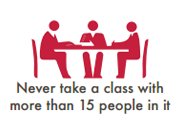
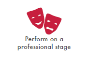
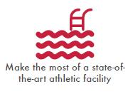

3 Signs You're Ready for Bard Academy
High School.
Reimagined.



At Bard Academy at Simon's Rock, we believe that traditional American high school isn't for everyone. For too many students, junior and senior years end up less about learning and more about preparing for standardized tests and filling out college applications.
The nation's only independent school for 9th and 10th grade boarding and day students, Bard Academy prepares students to enter college after just two years of high school.
You may be ready for an accelerated high school program if:
- You question everything. You're searching for teachers and peers who want to help you find the answers–and maybe ask even deeper questions.
- You find yourself thinking and talking about books and ideas outside the classroom. You're seeking a community of equally curious, passionate and creative peers who would love to continue discussions into the dining hall, dorms and beyond.
- You can envision yourself starting college after 10th grade. You know there's a whole world out there waiting for you, and you’re ready now to start focusing on your area(s) of interest and explore subjects and ways of thinking not accessible in a traditional high school.
If you see yourself in any of the above, contact us to find out more or to schedule a campus visit.
Download PDF
Accredited by the New England Association of Schools and Colleges (NEASC)
Bard College at Simon's Rock // 84 Alford Rd. // Simon's Rock // Great Barrington, MA 01230 // 413 644 4400 // fax 413 528 7365 // © Bard College at Simon's Rock / All Rights Reserved